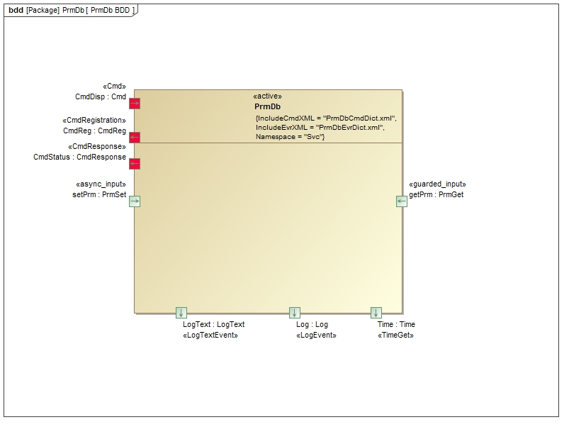
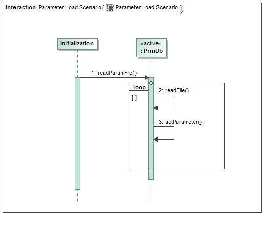

|
F´ Flight Software - C/C++ Documentation
Latest
A framework for building embedded system applications to NASA flight quality standards.
|
|
F´ Flight Software - C/C++ Documentation
Latest
A framework for building embedded system applications to NASA flight quality standards.
|
The Svc::PrmDb Component is used to store parameter values used by other components. The values are stored in serialized form. During initialization, Svc::PrmDb loads a set of parameters from a file, and stores the values in a table based on the parameter ID. Components that need parameters request their values during initialization after they have been loaded. Components occasionally receive updates to parameter values via a command, and the new values will be sent to Svc::PrmDb. A command will save the copy in memory back to the file.
The requirements for Svc::TlmChan are as follows:
| Requirement | Description | Verification Method |
|---|---|---|
| PRMDB-001 | The Svc::PrmDb component shall load parameter values from a file | Unit Test |
| PRMDB-002 | The Svc::PrmDb component shall provide an interface to read parameter values | Inspection, Unit Test |
| PRMDB-003 | The Svc::PrmDb component shall provide an interface to update parameter values | Inspection, Unit Test |
| PRMDB-004 | The Svc::PrmDb component shall provide a command to save the current parameter values | Inspection, Unit Test |
The Svc::PrmDb component has the following component diagram:

The Svc::PrmDb component uses the following port types:
| Port | Name | Direction | Type | Usage |
|---|---|---|---|---|
Fw::PrmGet | getPrm | Input | Synchronous | Get a parameter |
Fw::PrmSet | setPrm | Input | Asynchronous | Update a parameter |
The Svc::PrmDb component stores parameter values in a table by parameter ID. The table is mutex protected to prevent reading and writing from occurring at the same time. When the parameter file is read, the ID and serialized value are extracted and placed in the table. If an error occurs during the file load, any entries not successfully loaded will return a status to the getPrm port of PARAM_INVALID will be returned, otherwise PARAM_OK.
When a new parameter value is written to the setPrm port, the table in memory is updated, and the flag indicating a valid value is set.
When the component receives the PRM_SAVE_FILE command, it saves the entire table to the file, overwriting the old values. Unless the file is written, any parameter updates will be lost when the software is restarted.
The fields for each parameter value as stored in the parameter file are as follows:
| Description | Size (in bytes) | Value |
|---|---|---|
| Entry Delimiter | 1 | 0xA5 |
| Record Size | 4 | Id type size + number of bytes in parameter value |
| Parameter ID | Size of FwPrmIdType | Value of parameter ID |
| Parameter value | number of bytes in parameter | serialized bytes of value |
This diagram shows the scenario where parameters are loaded from a file.

This diagram shows the scenario where parameters are retrieved and updated by components.

This diagram shows the scenario where parameters are saved to a file.

Svc::PrmDb has no state machines.
Svc::PrmDb has no significant algorithms.
| Document | Link |
|---|---|
| Design Checklist | Link |
| Code Checklist | Link |
| Unit Test Checklist | Link |
TBD
To see unit test coverage run fprime-util check –coverage
| Date | Description |
|---|---|
| 7/15/2015 | Design review edits |
| 10/6/2015 | Unit test review edits |